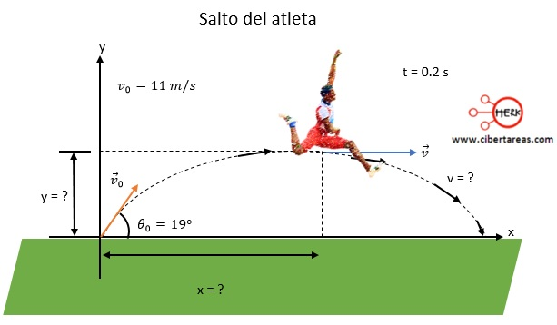
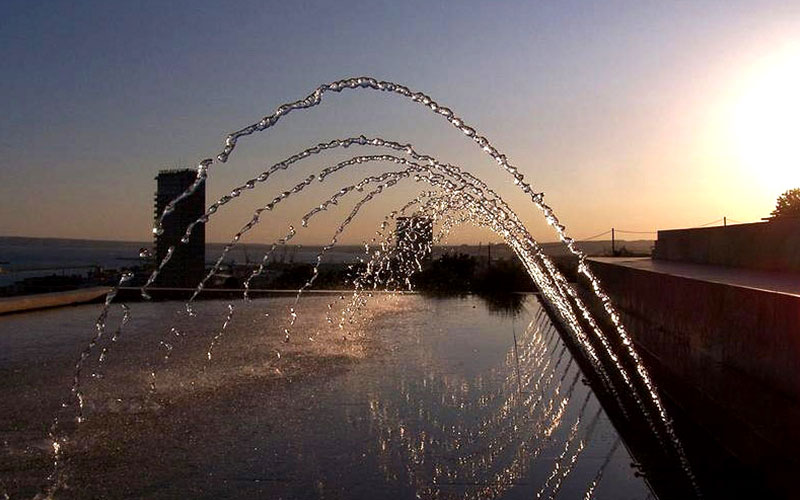

Tiro Parabólico
Ejemplos de movimiento parabólico
- El disparo de un proyectil militar (carga de artillería, mortero, etc.). Desde el cilindro del cañón hasta el punto de caída u objetivo.
- El chute de un balón de fútbol. Desde la arquería hasta caer en el campo contario.
- La trayectoria de una pelota de golf. Durante el tiro inicial de larga distancia.
- El chorro de agua de una manguera. Como las empleadas por los bomberos para sofocar un incendio.
- El chorro de agua de los aspersores giratorios. En un jardín o un parque, arrojando el líquido a su alrededor con una velocidad y ángulo uniformes.
- El lanzamiento de una piedra. Cuando intentamos derribar frutas de un árbol pero les erramos y caen del otro lado.
- Un saque de voleibol. Que hace elevarse la pelota por encima de la red y caer con el mismo ángulo de inclinación del otro lado.
- El lanzamiento de una bomba o misil. Desde un avión en pleno vuelo es un movimiento semiparabólico pues cursa la mitad de una parábola (pero responde a las mismas consideraciones físicas).
- El lanzamiento de un disco. Como los que se arrojan para practicar el tiro al blanco con un rifle.
- El rebote de una piedra sobre la superficie del agua. Trazará pequeñas parábolas cada vez más chicas con cada rebote, hasta que pierda el empuje inicial y se hunda.


